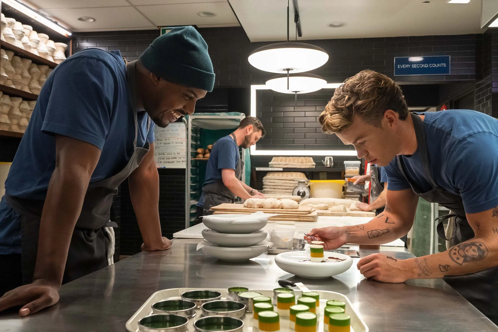

Hands All Day, Chef!
Kitchen Lingo Used in "The Bear"
Marcus and Luca making dessert dishes together
A big portion of FX’s “The Bear’s” accuracy is embodied through the lingo and slang that the cast is using on set. The show’s popularity has contributed to everyday people not working in the food service industry adapting the lingo into their own speech. Some of the terms can be a little confusing if you’re diving right into the show, so here’s a list of commonly used phrases in “The Bear:”
- Corner – I’m coming around the corner.
- Behind – I’m behind you.
- Back of house – Kitchen/Dish-washing area.
- Front of house – Where orders are taken, served, and customers dine.
- Hands – I need someone here to carry something right now.
- Fire – I need this dish to be prepared immediately.
- All day – the amount of something that is available for the entire shift.
- 86’d – the item has been removed from the menu.
- Heard – I understand what you’re saying, and I am listening to you.